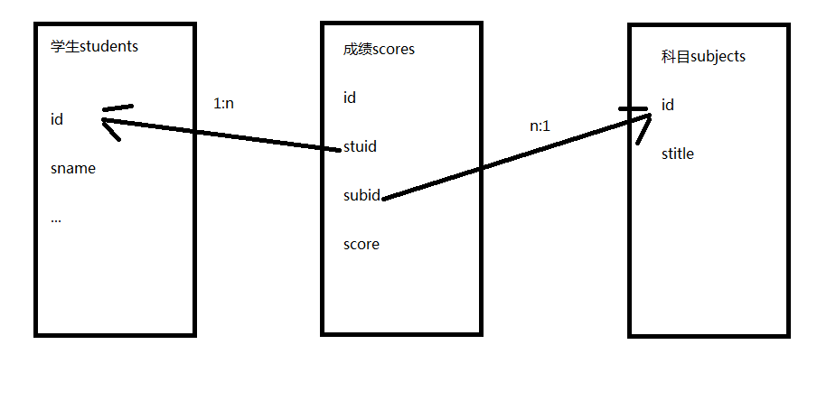

关系
- 创建成绩表scores，结构如下
- id
- 学生
- 科目
- 成绩
- 思考：学生列应该存什么信息呢？
- 答：学生列的数据不是在这里新建的，而应该从学生表引用过来，关系也是一条数据；根据范式要求应该存储学生的编号，而不是学生的姓名等其它信息
- 同理，科目表也是关系列，引用科目表中的数据

- 创建表的语句如下
create table scores(
id int primary key auto_increment,
stuid int,
subid int,
score decimal(5,2)
);
外键
- 思考：怎么保证关系列数据的有效性呢？任何整数都可以吗？
- 答：必须是学生表中id列存在的数据，可以通过外键约束进行数据的有效性验证
- 为stuid添加外键约束
alter table scores add constraint stu_sco foreign key(stuid) references students(id);
- 此时插入或者修改数据时，如果stuid的值在students表中不存在则会报错
- 在创建表时可以直接创建约束
create table scores(
id int primary key auto_increment,
stuid int,
subid int,
score decimal(5,2),
foreign key(stuid) references students(id),
foreign key(subid) references subjects(id)
);
外键的级联操作
- 在删除students表的数据时，如果这个id值在scores中已经存在，则会抛异常
- 推荐使用逻辑删除，还可以解决这个问题
- 可以创建表时指定级联操作，也可以在创建表后再修改外键的级联操作
- 语法
alter table scores add constraint stu_sco foreign key(stuid) references students(id) on delete cascade;
- 级联操作的类型包括：
- restrict（限制）：默认值，抛异常
- cascade（级联）：如果主表的记录删掉，则从表中相关联的记录都将被删除
- set null：将外键设置为空
- no action：什么都不做